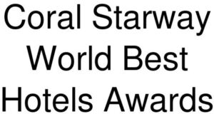

Trade Mark Journal No.2025/034 22 August 2025
WO0000001868750 (35,41)
Office of origin: Turkey
Date of International Registration:22 March 2025
Date of designation in the UK:
22 March 2025

- Class 35
- Advertising, marketing and public relations; organization of exhibitions and trade fairs for commercial or advertising purposes; consumer loyalty services for commercial, promotional, and/or advertising purposes; administration of incentive award programs to promote the sale of the goods and services of others; promoting the sale of goods and services of others by means of contests and incentive award programs; organizing of prize draws for promotional purposes; organization, operation, and management of incentive programs; advertising in the field of tourism and travel.
- Class 41
- Organizing, arranging and conducting of symposia, conferences, congresses, and seminars; sports, cultural and entertainment services, namely, ticket reservation and provision for cultural and entertainment events such as cinema, sports matches, theater, museums, and concerts; Publication and editing of printed matter, including magazines, books, newspapers, other than publicity texts; electronic publication services; arranging and conducting award ceremonies; organization of competitions and award ceremonies; organizing awards and award ceremonies related to accommodation services; organizing awards and award ceremonies related to agency services; organizing awards and award ceremonies related to tourism and travel; organizing award ceremonies to recognize achievement.
ODEON TURİZM İŞLETMECİLİĞİ ANONİM ŞİRKETİ
Representative: Büşra PEKHAMARAT SARAÇ, Etiler Mah. 829 Sk. A Plaza 3/104 Ofis No:11,, Muratpaşa, Antalya, TURKEY